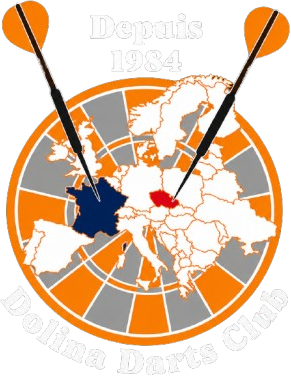

Chargement…

Feuille de match Championnat par équipes CPARDChargement…
Seules les manches sont enregistrées : pas de statistiques pour ce match.
· signez avec le doigt dans le cadre blanc. Astuce : tournez le téléphone pour avoir plus de place.
La feuille tient sur une page A4. Partagez-la (Mail pour le CPARD, WhatsApp, Enregistrer dans Fichiers…) ou ouvrez-la.